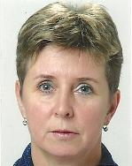

- Universitätsabschluss Physikalische Chemie TU Dresden 1981 als Diplom-Chemikerin
- Universitätsabschluss Betriebswirtschaft FU Hagen 1996 als Diplom-Wirtschaftschemikerin
- 23 Jahre Berufserfahrung in der Chip– und Leiterplattenfertigung
- 18 Jahre Leiterplattenerfahrung
- 12 Jahre in der Fertigung im Plating, Durchkontaktierung, Lötstopplacke, Endoberflächen und alle chemischen Prozesse
- 3 Jahre Forschung & Entwicklung, Leitung diverser Projekte zur Ausbeuteerhöhung und Prozessoptimierung, Technologietransfer und Management diverser Ingenieursdisziplinen bei führendem LP-Hersteller
- 10 Jahre Erfahrung im Verkauf von PCB Zuliefer-Produkten und -Prozessen
- Vorbehandlungen
- Durchkontaktierungen
- Plating-Prozesse
- Imaging-Prozesse
- Ätz– und Strippprozesse
- Lötstopplackprozesse
- Endoberflächen
- 5 Jahre Erfahrung als Laborleiterin (chemisch-technisch, metallurgisch, physikalisch)
- 5 Jahre Forschung & Entwicklung in der Chipherstellung (Flip Chip, Imaging, Plating von Lothügeln)
- 3 Jahre Erfahrung in der konventionellen Galvanotechnik (Cu, Ni, Cr Plating, Alkalisch, sauer und cyanidisch Zn, Chromatierungen, Phosphatierungen, Passivierungen, Vorbehandlungen)